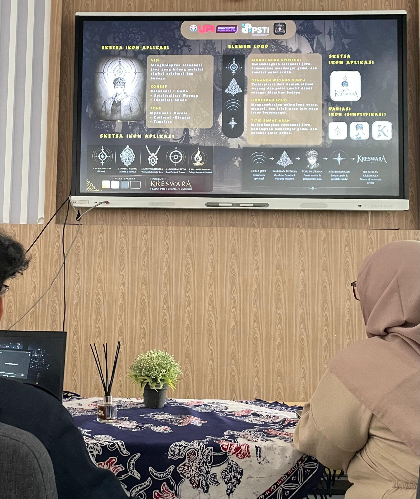
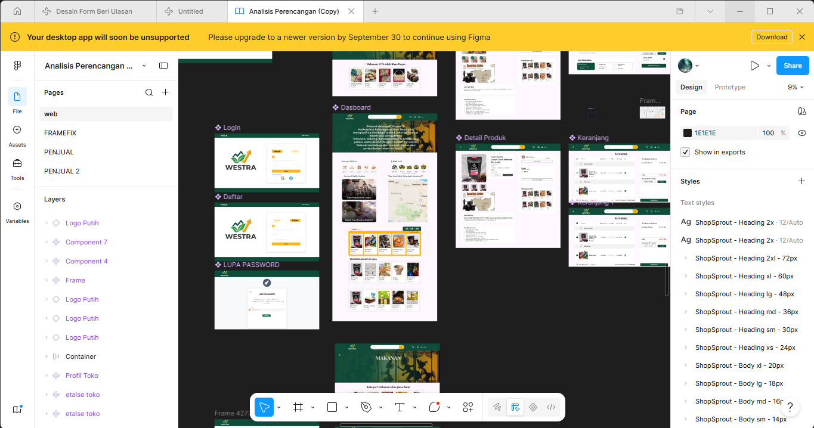
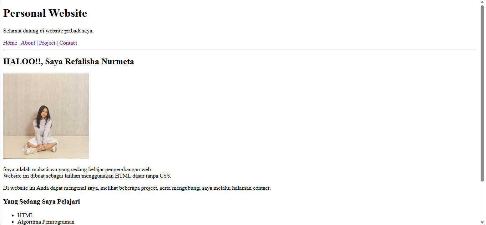

Selamat datang di website pribadi saya.
Berikut adalah beberapa project sederhana yang pernah atau sedang saya kerjakan.

Alat ini dibuat untuk mendeteksi terjadi nya longsor, jike terdapat pergerakan di tanah alat ini akan mendeteksi dan mengeluarkan bunyi alarm

Kreswara adalah game bergenre action puzzle adventure dengan nuansa tech fantasy yang menggabungkan budaya pewayangan tradisional dengan elemen teknologi digital modern.

Westra adalah e commerce yang di desain melalui figma

Web untuk memperkenal kan diri serta sebagai bahan belajar menggunakan HTML
| Ringkasan Portofolio Project | |||
| No | Nama Project | Detail Project | |
| Teknologi | Status | ||
| 1 | Pendeteksi longsor | sistem komunikasi Internet of Things (IoT), sensor gerak | selesai |
| 2 | Kreswara Studio | CSS & amp; Java | |
| 3 | Westra | figma | |
| 4 | Membuat Web Pribadi | HTML | Dalam Pengembangan |
Tertarik berdiskusi? Hubungi saya
© 2026 Refalisha Nurmeta